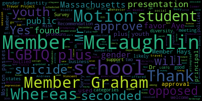
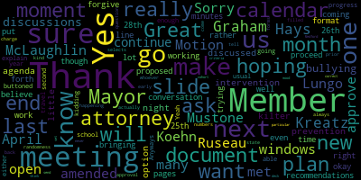
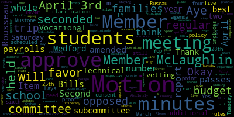
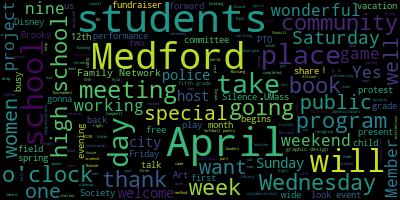

AI-generated transcript of 4.10.2023 Medford School Committee Regular Meeting
English | español | português | 中国人 | kreyol ayisyen | tiếng việt | ខ្មែរ | русский | عربي | 한국인
Back to all transcripts
[Lungo-Koehn]: I pledge allegiance to the flag of the United States of America, and to the republic for which it stands, one nation under God, indivisible, with liberty and justice for all. Thank you. Is there a motion to go into executive session? Seconded by member Graham. All those in favor? Roll call. We'll go to 207.
[SPEAKER_09]: Was first and second on that? I'm sorry.
[Lungo-Koehn]: Member McLaughlin, then Member Graham.
[Ruseau]: Thank you. Member Graham.
[Lungo-Koehn]: Yes.
[Ruseau]: Member Hays.
[Lungo-Koehn]: Yes.
[Ruseau]: Member Kreatz. Yes. Member McLaughlin. Yes. Member Mustone. Yes. Member Ruseau. Yes. Mayor Lungo-Koehn.
[Lungo-Koehn]: Yes. 70 affirmative, 0 in the negative. Move to executive session.
[SPEAKER_10]: Is that your phone, Peter? Yeah, it's mine. You good? Yeah, it hurts. Is it an iPhone? No, it's a broken Samsung. Yeah. Thank you. So it's really nice. Oh my gosh. I know it's very gorgeous, but yes.
[Clerk]: That was wonderful. She's got to spread her wings. We're excited about the big lottery.
[Graham]: Bills and payrolls, minutes from the committee of the whole budget, FY 24 meeting held April 3rd and minutes from the sixth regular school committee meeting held April 3rd.
[McLaughlin]: Member Graham?
[Graham]: Yes.
[McLaughlin]: I have an issue with the minutes from the last meeting. Motion to sever.
[Graham]: Motion to sever by Member McLaughlin. Seconded by Member Mustone. All those in favor? Aye. Okay, Member McLaughlin.
[McLaughlin]: So for the minutes from the last meeting, just on the last page, it just says, when we were talking with Ms. Fidler-Carey about the before school and after school program, And she was mentioning that there would be wraparound paraprofessionals. And I had asked if that would open more opportunities for students with disabilities. And she said, she believed it would, but in the, let's see, halfway up, it says member McLaughlin follows up and is asking slash looking for confirmation. If not opening it up to students with disabilities, they have access to the programming regardless. And I just want to clarify that I'm not, I was not asking or looking for confirmation. I was stating, that students with disabilities have access to before and after school programming, regardless of wraparound services and wraparound paraprofessionals. So I'm just asking for that clarification. Do I need to make a motion?
[Graham]: Is there a motion to approve as amended?
[Ruseau]: Motion to approve as amended.
[Graham]: Second. Okay, motion to approve the April 3rd regular school committee meeting minutes as amended by member Rousseau, seconded by member McLaughlin. All those in favor? Aye. Aye. All those opposed? Okay, I think we still have a need proof. Yep, motion to approve the consent agenda, which includes bills and payrolls and the committee of the whole budget meeting held on April 3rd. Motion to approve by member McLaughlin, seconded by member Rousseau. All those in favor? Aye. All those opposed? Motion passes. Item number four, report of subcommittees. We have the minutes of the rules and policy subcommittee held on March 28th, 2023. Member Ruseau?
[Ruseau]: Thank you. I have too many windows open. Sorry, one moment. Thank you. Great. Yes, thank you. So we met on April 3 2023 to continue discussions on the bullying prevention and intervention plan. Our agenda was a little off kilter because we were hoping our attorney would be with us but That was not an option that night. So we discussed how to proceed with the document and at the next meeting, which will be on the 28th, I believe. One moment, I do have that right here. No, the, okay, 26th, 25th. I don't have it in my calendar, even though I know I put it in my calendar. So forgive me. At our next meeting, which is coming up this month, the end of the month, we will be working with our attorney to go through all of the recommendations that he had, as well as bringing forth a proposed new document and new format, rather than trying to work through the 38 pages one line at a time. We had a lot of great conversation that the minutes explain. I'm hoping that the next meeting is either the last or second to the last meeting on this plan, and that we'll be able to make enough progress to get this buttoned up before the end of the school year.
[Graham]: And just as a point of clarification, the meeting is scheduled for Tuesday, April 25th. Is there a motion to approve the minutes?
[McLaughlin]: Motion to approve.
[Graham]: Motion to approve the minutes by Member McLaughlin, seconded by? Member Hays, all those in favor? All those opposed? Motion passes. Item number five, the report of the superintendent. Updates and comments, Dr. Edward-Vinson.
[Edouard-Vincent]: Hey, good evening. I hope that everyone had a joyful Easter and Passover gatherings this past weekend. I just wanted to inform the committee that last week, our AI are completed their Jesse completed their visit with Medford public schools that approximately 100 classrooms. were observed, they conducted countless interviews of administrators, school committee members. And so we look forward to getting that report back and learning from what Dessy has to share with us from the district. And this special review takes place about once every 10 years or so. So I'm hoping and looking forward to the results of all of the work that they did, our review. I would like to thank Professor Regina Millen from the University, from UMass Lowell, UMass Lowell's Graphic Design and Illustration program, who came to speak to both our art students and our graphic design students. She did talk about the UMass Laurel program and spoke about different career paths that are available to our students in the graphic and design and illustration fields. Similar to the women in the construction, electrical, robotics, and welding fields, as well as the women leaders who spoke to students to celebrate Women's History Month. So these speakers present real life future options for all of our students. I also want to talk about our one of our vocational programs which is working collaboratively with the Medford family network. Some of our graphic design students have been working very very diligently on designing. with special permission from the authors, they have scanned and taken books, 10 books in total. And this project involves students using a special machine where they print the books. They use Adobe Illustrator. The special machine is a Roland 54 inch VersaCam. and they laminate the books and they add granites. And these books are going to be posted to fences in some of the parks throughout Medford. So it's wonderful to see our students working collaboratively with the Medford Family Network and making a difference in our community. So we're very excited and happy about the work that they're doing there. I also want to recognize our Mustang marching band, because they will be traveling to Florida. Yes, yes to Disney Springs at Walt Disney World next week so they're leaving on Saturday, and. Oh, thank you, Member Mustone. They leave on Wednesday, and on Saturday, April 15th at 1230, I believe that's their performance. So that's their big performance. And this is the group of students that are going by train. So we talk about trains, planes, and automobiles. We look forward to them performing well and coming back to maybe share with us a highlight or two about the adventure on their way down to Disney. So we are going to be cheering for our Medford Mustang marching band. Congratulations. We wish you the best of luck. I also want to congratulate Kyla Magris and Allison Waldron from the Brooks School. They are fifth grade students working with CC, they are fifth grade CCSR leaders, and they organized a school-wide coin challenge to benefit the American Cancer Society. They asked students to bring in coins. And the pennies and nickels quickly quickly multiplied, and they raised a total of $1400. So I want to say great job and congratulations to both Kyla and Allison and thank you to the book school for donating that funding to the American Cancer Society, you did a wonderful job. Also last week, right before our long weekend, sold out crowd at the high school. The Wizards, the Harlem Wizards came to play. It was a fundraiser for Medford Public Schools. All of the elementary PTOs collaborated. So it was wonderful seeing the high school auditorium jam-packed with kids, with families, basketball competitions, teachers, administrators, students, they got to compete and play and it was a wonderful time and I truly hope that it was a fabulous fundraiser for all of our PTOs. I also want to thank our Medford Cultural Council for providing funding for the following projects at the Medford Public Schools. Connecting the Community Through Art, the Roberts PTO Art Night 2023, and the Brooks Third Grade Songwriting Project. So again, we appreciate your support, Medford Cultural Council. There are a number of events that are going to take place between now and our next meeting, which is May 1st, bearing in mind that we have April vacation. So, tomorrow, April 11, it's evening with our poet laureate poetry as protests protest and peacemaker with Terry Carter at the method public library from seven to 830. He will also be recognizing some of our students that participated in the poetry contest. So, once all of these preliminary celebrations we will recognize them at a future meeting. On April 12th, I wanna say MEAP, our Medford's Early Education Program, will be hosting an open house. On April 12th, this coming Wednesday, is our middle school lottery. That's gonna be held by Zoom at three o'clock. Also on Wednesday the 12th, our spring program advisory committee meeting for the vocational side of the house. That's at 6 p.m. Also on April 12 Wednesdays a very very busy day CPAC is going to be meeting, and the theme for Wednesday's meeting is understanding and managing anxiety in your neuro diverse child. On Thursday, April 13 is the method high school science fair from nine to 12 that's taking place in our science lecture hall. Also on the 13th National Honor Society hosts, Mr. MHS fundraiser. That's gonna be from 6 to 8 p.m. in the Caron Theater. On April 14th, Medford Family Network hosts the Friday Family Fun Night from 4.30 to 7.30 in our gym. On April 15th, Saturday, it's One Boston Day. It's the 10th annual Crystal Campbell Softball Tournament. begins with the opening ceremony at 930am at Columbus Park, and we will be honored to have crystals brother, Bill Campbell and marathon bombing survivors, Patrick and Jessica downs roseanne's Doria and jack Jackie webb and Paul Norton. participating in the ceremonial first pitch. The first game begins at 10 o'clock, Medford plays Arlington Catholic, and the second game begins at one, Billerica versus Swampskid. There will be a concession stand, and part two of the tournament takes place on Sunday, April 16th, and at 10 o'clock and 1 p.m. are the games on Sunday. On April 15 as well Saturday, Mayor longer current is going to be holding the spring city wide cleanup from 10 to one o'clock. Anyone, any and all are welcome to join and be part of our city wide cleanup. On April 16 Sunday, Medford police hosts the community inclusion day from 11 to 1pm. The Medford police welcome everyone to their headquarters for a free sensory friendly day for individuals with autism spectrum disorder and any other developmental and intellectual disability. The event will feature meet your police officers, take a tour of the new station, touch a truck, and also how to enroll your child in the safe watch program, as well as learn how to keep your child safe. So please take advantage of that event on April 16 from 11 to one at the police station. On April 16 as well. It's our interfaith community if tar. It's the daily breaking of the fast. During the holy month of Ramadan. It's hosted by the city of Medford and our office of diversity, equity and inclusion, it will take place at City Hall from six to 8pm and all are welcome. Oh, it will take place at ICCM from six to 8pm, and all are welcome. April 17 to the 21st is our April vacation week there is no school for that entire week. Yes. April 17 is also Medford's annual Patriots Day ceremony at 10 o'clock at the old burying ground on Salem Street, and the arrival of Paul Revere. April 17 is also another day for a special CCSR project. Our fourth and fifth grade students at the Brooks School are asking for help for us to help clean our Korean war veteran gravestones at Oak Grove Cemetery from 1230 to 1.30pm on April 17. So during the vacation, the Medford Family Network will host drop-in playtime at their center at the high school. Tuesdays, nine to 12, Wednesdays, nine to 12, and Thursday and Friday. That whole week, nine to 12 will be drop-in time. We're almost at the end of the line. I got three more to go. Medford Kiwanis on April 19th. They are holding registration and first meeting for individual high school aged students, and up with physical and or intellectual disabilities. The goal is to provide a once a month meeting place for members to meet new friends and socialize, it will take place at the Medford public library on the second floor from 630 to 830pm. On April 22 and 23 Tufts University athletics presents free community sports weekend for our students in grades K through eight, and there will be game day on the 22nd at 10 o'clock women's tennis. men and women's track and field at 11 men's lacrosse softball tennis. Again, there are a lot of activities taking place both on Saturday and Sunday. So please look into that if you're interested in the free community sports weekend for students, grades K through eight. I'm at the high school they'll be presenting a performance at Karen theater on the 27th and the 28th you're in town. And in closing this Friday, April 14 is the glisten day. or the Gay Lesbian Straight Network of Silence. This is a day that started back in the mid-90s by two college students. The Day of Silence is when LGBTQ plus students and allies all around the country and the world take a vow of silence to protest the harmful effects of harassment and discrimination of LGBTQ plus students in schools. This is expanded to reach hundreds of thousands of students each year, and students share their experiences to bring attention to ways their schools and communities can become more inclusive. Those are my announcements for this evening. Thank you so much.
[Lungo-Koehn]: Thank you, Dr. Edward-Vincent. It's a busy, busy April.
[Edouard-Vincent]: Busy, busy.
[Lungo-Koehn]: Oh, good, thanks. And then June, yep. Number two, we have Andrews Middle School and McGlynn Middle School presentations by Mr. Michael Downs, principal of the Andrews, and Mr. Nicholas Tucci, principal of McGlynn.
[SPEAKER_09]: Welcome.
[Tucci]: Good evening and welcome everybody, thank you for giving us this opportunity to speak a little bit about the transition of many of our Medford public school students from fifth grade to sixth grade and certainly I wanna welcome all those come on Wednesday, when they get selected for the McGlynn middle school. and I can't wait to be their principal as their sixth grade and middle school year kind of commences, years commence. So today I'm just going to spend a little bit of time giving you all an opportunity to hear a little bit about the presentation that I know you have in front of you that students and families are going to get when they arrive at the McGlynn Middle School on Tuesday, May 2nd, which is the day of the sixth grade open house for students that are going to be coming to the McGlynn Middle School. So when students arrive at our school on Tuesday, May 2nd, they're going to be funneled into our auditorium. And from there, we're going to deliver an opening presentation led by myself and my assistant principal, Mr. John Bruno. And we're gonna have a couple of special speakers, a student who is going to be speaking a little bit about their experiences and sharing some reflections as to how to find success transitioning from elementary to middle school. After our presentation that we're going to deliver in the auditorium. students are gonna go to the best part of the open house experience where they'll do a scavenger hunt that'll be led by a sixth grade teacher and also a student ambassador. And they're going to engage in this opportunity to hunt throughout the school and try to visit a number of different stops. And including your package, you can see stops like they'll go into a sample art classroom or a Spanish classroom. They'll have an opportunity to go to our curriculum fair. where they'll learn about the different offerings that we have from our curriculum standpoint, English language arts and science and math and social studies. Then they'll have an opportunity to visit our club and activities fair, which is one of our biggest tips for how you can find success transition from elementary and middle school is to join a club, get involved in the life of the school. And we're going to give them a little taste of what some of those offerings are going to be like. In between some of their stops, they'll go by a performance by Mrs. Chang's wonderful strings ensemble or the wonderful band that we have. So they'll be kind of greeted as they arrive in the school and make their way from stop to stop with some wonderful musical performances. And over the course of this opportunity, they're going to have the chance to interact with classmates, teachers, and certainly you know, some of our student ambassadors that will be kind of like answering their questions and getting them from stop to stop. And it is our hope at the end of the evening presentation, students and families will be welcomed back into the cafeteria for a little bit of slush and opportunity to socialize and ask further questions. And we really want to give them every opportunity to make a really good transition into a welcoming, awesome school environment. So from my standpoint, while this week is filled with preparations for, you know, having a really solid week before April vacation, We have MCAS testing this week for English Language Arts on Tuesday and Thursday, and we're wishing our families and students a wonderful MCAS season. We want to also welcome on board our incoming class, and I really can't wait to get to know them and give them every opportunity to feel comfortable making this important transition in their educational career. And like I do every year, I want to just put it out there to the community that Over the summertime, I'm gonna have office hours where I'll be able to invite families to come in and they can sign up to come in and meet with me or just drop by. I plan to have office hours where I'll be out in the schoolyard shooting hoops and just inviting people to come on by and shoot hoops to the principal and get to know me and learn a little bit about what the middle school experience is going to be like. So every opportunity that we have to help our students and families make this transition to middle school, this is what we're all about and interested in doing at this point in time. And thank you all for your time. And if you have any questions for me, I'm happy to take them right now. If not, I'll turn it over to Principal Downs too as well. Thank you.
[Lungo-Koehn]: I've been through that. Open house, Mr. Tucci, it's wonderful. So keep up the good work. Mr. Downs, welcome.
[Downs]: Welcome. Welcome. Sorry about that. Good evening, everyone. I'm not texting or anything. I forgot to bring my MacBook. So I'm cheating off my phone and I can't see that far. So I can't see my own presentation. So I apologize. So, you know, Andrews is, of course, as we all know, is a great school named after Madeline Duggar Andrews, our first woman of color elected in Medford. So we're very proud of that fact. We say it quite often at the Andrews. And our motto at the Andrews if you want to go through is excellence through responsibility and respect and part of that, of course, is treating everyone with kindness being responsible for your actions. making sure that you do the best that you can each and every day. We say this quite a bit. And my next slide that kind of goes along with that, we actually take time every year to go over manners. As my mother used to say, gimme's don't get anything that you don't want. So we tell our kids, make sure you say please and thank yous, be kind to all the adults in the building, especially our support staff, our CAF staff. We feel that manners is something that will go forward with them for the rest of their life if they choose to listen to us when we do these presentations. But we feel it's an important part of developing young children. On the next slide, in class, we ask students, again, to do the best that they can, to be respectful of their classmates, be on time, be prepared. All these are really life lessons. Again, this is part of what we do in middle school. Yes, we teach academics and yes, we have lots of fun activities and events and clubs, but at the end of the day, our job is to also help them grow as individuals. And we take this very seriously at the Andrews. I just hope whoever is after me will see it that way as well. I can't make any promises, but I'm sure they will. And then on the next slide, Some of our basics, we're doing this presentation, part of this presentation will be at our open house, which is on May 4th. So we're looking forward to meeting our sixth graders, our incoming sixth graders. And we think communication is a huge piece. I know here at the school community, communication to the community is a big part of what you're trying to achieve. And we do that at the Andrews. For those of you that are parents at my school, you know that my communication is pretty succinct. It's not wordy. It's pretty much bullet form for the most part, People are tired at the end of the day and the last thing they want to do is read about my soliloquies on education. So we do that quite often, of course. We have our student of the month. We have our big breakfast at the end of the year. The best part about the breakfast at the end of the year is grandma and grandpa usually get to come and it's a big moment for them as well. And then we're gonna go on to the next one. We have our daily schedule. Our schedule for our sixth graders in particular is blocks two and eight are their exploratory time, block five is their lunch. And we provide them with an example of a schedule so that they don't get too nervous about what their day is going to look like. And of course, we want them to restart on time and be there in their homeroom area by 7.50. Next slide, please, Dr. V. Dr. Cushing, whoever's doing it. We have lots and lots of clubs and activities and the great part about the Andrews and McGlynn is we share our clubs and activities, which is great for students who in particular in the sixth grade who are now separated from the classmates for the first time in their life. And now they have an opportunity to hang out with them after school in a productive way to learn many different things. The one club I'm going to shout out because it took me four years to get the money for I did a grant and we have a robots club now with real robots on. But unfortunately my, my advisor is an eighth grader miles Hilliard if your parents are watching. He is moving on to the high school next year. And without him, I don't know who's going to be able to put the robots together. But hopefully, somebody's learned this year, some sixth grader. I know I have one named Cal who's doing quite well with it. So hopefully, they'll continue that little thing. And of course, we're part of the MGL. I'm sorry, the Boston Sport League. We're very fortunate to be part of that as well. Next slide, please, Dr. Cushing. Please, yep. And then this is some activities that we put in here. Again, we have lots and lots of activities, everything from sports to crafts and things that one of the big things, of course, is CCSR. I know Mr. Tucci has his CCSR as well. They do a lot of great things for our school, including fundraising, et cetera. So the next one, please. And just a little Mustang pride. We want kids to be happy at our school. For the most part, they are, I would say, most days, except after MCAS. Community service is a huge part of our school. For those of you who have been parents in my school, you know that I've done several food drives in the last few years, especially since the pandemic. and clothing drives and school supply drives. I hope whoever takes over after me continues that. This year alone, I raised over $2,500 in gift cards from members of my school community to give to families in need, especially during the holiday season. And that is something that's probably the thing I'm most proud of, just giving to those in our city part of Mustang Nation. I hope that's something that people will remember long after I'm gone that when times when they needed them, I was able to help them in a small way. And again, you know, we try to help our fellow Mustangs out as much as we can. We are currently also did a cereal box drive with Melanie North and CCSR and hundreds of boxes of cereal. I know it sounds minor, but you know, kids need breakfast and she was able to provide that for hundreds of families. And there's a couple of pictures in here at the end. I'm gonna try to catch up our tree of warmth. Again, it's a big hit every year. I'm gonna give a shout out to miss Kathy O'Donoghue, 7B. This is her baby. And the tree of warmth, as you can see, is hats, gloves, and mittens. Any student at any time may grab a pair or a hat if they need it. And we have found that most kids take it if they really do need it. And then whatever is left at the end of the holiday season, we donate to local charities. It's a big part of who we are. Again, we have newsletters to go out by teams. I put some hyperlinks in there for some of our team newsletters. We do those every month. Each team does a different one. And I believe that's it. So I didn't want to be too long and too short at the same time, but you know, succinct.
[McLaughlin]: Yeah.
[Downs]: Thank you. Thank you.
[Lungo-Koehn]: You're welcome. Tree of warmth. That's wonderful. Member McLaughlin.
[McLaughlin]: Sorry, I just wanted to say thank you, Mr. Downs, for your service to Medford. And Haverhill's gain is Medford's loss. We wish you all the best. We know you're going to do well, and I'm glad you're getting back to the Valley and will be part of the Merrimack Valley that so needs you. So thank you.
[Downs]: I appreciate that. I really do. Thank you so much. Thank you, everyone. Thank you for the presentation. Have a nice evening, everyone. Thank you so much.
[Lungo-Koehn]: Take care. Number three, we have recommendation to approve overnight travel to Marlborough for SkillsUSA students. Mr. Chad Fallon, principal, will be presenting.
[Edouard-Vincent]: Yes, I thought Principal Fallon was gonna be on Zoom. I think they were.
[Lungo-Koehn]: We can take maybe a motion to table or does anybody else?
[Edouard-Vincent]: I can present his request for SkillsUSA.
[SPEAKER_10]: Let's find my report.
[Edouard-Vincent]: Member Graham, would you kindly read it because I'm not seeing it right now.
[Graham]: Absolutely. Thank you. I'll do my best Principal Fallon voice and try to move quickly. Each year Medford Vocational Technical High School joins other vocational schools from across the state to compete in their respective career technical area. As you may recall, we place every year winning bronze, silver, and gold in most categories. Please see the details below regarding the itinerary of events. There will be two students from cosmetology and two students from graphic design. I'm seeking approval of this annual trip for students and advisors. The cost has been paid from our SkillsUSA competition line in our regular operating budget. The field trip starts on Thursday, April 27th at 11am. and concludes on Saturday with an award ceremony at 9.30 a.m. at the Best Western Trade Center, and they will return back to Medford at around 3 p.m. on Saturday, the 29th. Motion to approve. Second.
[Lungo-Koehn]: Motion for approval by Member McLaughlin, seconded by Member Graham. All those in favor? Aye. All those opposed? Motion passes. Recommendation to, what'd you say?
[Edouard-Vincent]: I said thank you.
[Lungo-Koehn]: Thank you, Member Graham. Recommendation to approve travel to Spain, Dr. Vilma Bo, coordinator of world language and Dr. Peter Cushing. Welcome. Thank you.
[Cushing]: Thank you very much, Madam Mayor, member of the school committee. So this is a unique opportunity. This is actually an immersion trip where students will spend about 50% of the time living with a host family in Spain, while then also moving on at the latter half of the trip to more of the tours that you're familiar with, which are, you know, while not necessarily a language immersion trip, similar to the one that's going to France next week. This is a specific language immersion trip for students taking Spanish while it will be opened up to other students. It is specifically designed for students to reside with Spanish families and to really get that authentic learning experience. Sorry I'm talking with my hands but We really hope that you'll approve this. We will make sure that all the requisite insurance are there. This is not the same company that we usually use for our trips. It is a different company, but Ms. Bebeau and the other teachers involved in planning this trip have really done their due diligence and it's tremendous opportunity for our students.
[Lungo-Koehn]: Yeah. Yes, Member McLaughlin, then Member Ruseau is your light on. Member McLaughlin.
[McLaughlin]: Yeah, thank you. I just had a question on I'm assuming you when you said the requisite insurance materials would have you that there will be an option for cancellation or something. I know that, you know, when we had the COVID experience with field trip and trying to get money back and all that don't want to obviously, you know, don't expect another global pandemic but you know, is there an option for cancellation?
[Cushing]: There will be just, everyone should know that those insurances are not as easy to access for cancellation, but it will be an option pending, you know, global unrest, various things along those lines. Thank you. Member Ruseau.
[Ruseau]: Thank you. Can I go? Just kidding.
[Cushing]: We will be looking for chaperones.
[Ruseau]: Yeah. Anyways. I was just going to ask that we make sure that the usual travel approval forms come back to us prior to it actually happening. I know this is really kind of early, but we do really want to make sure that that is always filled out. So thank you.
[Cushing]: I'm actually working on revamping those forms right now. And as a prelude, our language tours, we will also be looking for an Italian tour next year that we'll bring up in the May, at some point in May.
[Graham]: Member Graham. Can I just ask one more question? Given that students will be staying with families in Spain, is there additional vetting that we've done with the tour operator about the families that our students will stay with? And does that create any sort of additional liability for us to consider as we think about approving this trip.
[Cushing]: I'll have to look into the liability waivers, but there's no additional vetting that the Medford Public Schools will do. The organization does the vetting and we, I mean, there's no international quarry or fingerprint check that we would be able to run. So we go on the basis of the organization who has done these trips successfully for a long time, being able to provide that. But I do understand your concern clearly.
[Graham]: And so it sounds like you are comfortable with the amount of vetting that happens between the organization that we are signing on with and the families that agree to host our students.
[Cushing]: Correct. And while they're with the families, they're still in contact and with our teachers, chaperones, and other personnel throughout that period of approximately five days.
[Graham]: Thank you.
[Cushing]: Motion to approve. Sorry.
[Lungo-Koehn]: That's OK. Motion to approve. for approval by member graham seconded by member mclaughlin all those in favor aye all those opposed motion passes and our fifth presentation is on the process and timeline of tiered focused monitoring and out of district enrollment update miss joan bowen director of student services good evening we saved the best for last i think i'm just kidding
[O'Connor]: So I just, tonight I'm going to walk you through the TAD focused monitoring process that Medford is undergoing this year. We're in our self-assessment phase. This is formerly known as CPI, the Coordinated Program Review, but they've changed the title on it. Next slide, please. It's okay. So basically tiered focused monitoring is the review of select policies, procedures, student records, and building facilities to see if schools and districts are in compliance with or following the state and federal laws and regulations for special education and civil rights. The PSM reviews all school districts, charter schools, vocational schools, and virtual schools across the state every three years. So this year we're in our district self assessment. Next year, the activities will include a parent survey and onsite visit with it. Ted focus morning will actually do a record review a document review, they'll interview staff families. And they'll do a facility observation. So this, they want to make sure that all our special education program aren't located in one part of the building. They want to make sure that our students have equal access to all the opportunities. Once that is done, they'll take a look at all of the information that we've provided and do an analysis of it and come up with a report. And if at any time they find that the district is not in compliance, they'll ask us to complete a corrective action plan. So if we were found in non-compliance for meeting timelines, I'd have to do a training with all staff members, teachers, evaluators, administrators, to make sure that they understand that this is the process and this is what needs to be followed. And then we submit that, they accept it, and then we have to have a monitoring process going forward. So the next onsite visit for Medford is during the 23-24 school year. And this just breaks down what the different but the process and the identified elements that they are going to be specifically looking at for Medford. So Medford's in group A, and it's called universal standards, and they address student identification, IEP development, programming and support services, and equal opportunity. In addition to those, the department has reserved a specific set of criteria collectively known as targeted standards employed when the LEA or school level risk assessment data includes that there is a potential issue. Identified targeted standards are assessed in addition to the universal standards. Next slide, please. So the self-assessment, this is what we're deep in right now. We have go through all, we're given the documents that we need to upload to the web-based management system. There's documentation for monitoring all the elements, as well as input of sample student and when appropriate staff records. Upon completion of all the required portions of the self-assessment, it's submitted to the department for review. For Medford, these are the specific indicators and special education and civil rights criterion that were selected. There are three indicators, which I will describe in the next slide. There's 11 special ed criteria, as well as three civil rights criteria. So the indicators there are three that we need to submit the data collection is during an identified period of time that they have given to us so the first one is indicator 11 and that measures timelines for determining initial special special education eligibility. From the moment the parent requests an evaluation to the 45 days when it's completed, we have to make sure that we've met all the requirements. So we have to upload all the students' names, the process we followed, the dates, so they will come with their on-site visit and take a look at our binders to make sure that we actually follow the process. Indicator 12 measures transition from early intervention to special education under IDEA. So this looks at evaluating students at the age of three or prior to three, finding them eligible if they require special education services and making sure that plan is put into place before their third birthday. And then indicator 13 is our percent of youth with IEPs age 14 and above with an IEP that includes measurable post-secondary goals that are annually updated based on age appropriate transition assessment, transition services, courses of study that will all reasonably enable the student to meet those post-secondary goals and annual IEP goals related to their transition service needs. So indicator 11, we were giving the, The timeline of October 1st to December 31st of 2022. Indicator 12 is January 1st to March 31st. And indicator 13 is October 1st to March 31st as well. Next slide is our special education criteria. And if you want more information, I can provide you the detail of what each specific criteria entails. For example, SE26 parent participation. We want to make sure that the parents are involved in when the meeting is scheduled, that they're included on the meeting invitation, and that they have an active part in the IEP process. Next slide is the civil rights criterion. And these three were selected for Medford. The first one is the availability of information of academic counseling and general curriculum. So this means that Students have access all students have access to counseling whether it's guidance counseling whether it's school based school adjustment Councilor. We look at our materials to make sure that they are bias free, and then the responsibilities of the school principal.
[Lungo-Koehn]: So for example, yeah, I'm sorry.
[Ruseau]: I just didn't want you to get off of this slide before I ask this question. Sure. Because there's no numbers, and I can't tell you where to go. But do you know how the state selects these? Is there some randomness? Do they have whoever's in charge is in a particular mood?
[O'Connor]: So I don't know the specific, but I know everyone in Cohort A in Massachusetts is going through this. They have the same criteria selected for them. Yeah.
[Ruseau]: Thank you.
[O'Connor]: So I don't know. I think every year they rotate through all of them. There's probably 50 something criteria for special education. There's about 30 for civil rights. So I think it may be based on PRS complaints. It may be based on things that they're hearing. So they wanna take a deeper dive into it, but every three years and every six years, it's totally different criteria.
[Ruseau]: But it's never just like, this isn't the Medford set of criteria. No, this is all of cohort A, correct.
[McLaughlin]: Point of information. Sorry. Information member McLaughlin, but the indicators are 15 indicators.
[Lungo-Koehn]: No, there's yes, there is 15.
[McLaughlin]: So there's 15 indicators. So if the school committee is interested and wants to know what the 15 indicators are, I can, I can provide you could send us the 15 indicators. And so they randomize, I would assume they ran my, or maybe based on PRS, but I would assume they randomize the indicators anyway that they pick. And then, you know, one cohort gets some in the other gets the other. But the indicators are important to know because it's really sort of how we're being judged on special education across the state. So I encourage the school committee, if we can get a copy of them, that would be great. Thank you.
[O'Connor]: I actually went through a training at the beginning of the year and they broke everything down. So I can forward that to you and share it with you just so you have a better understanding.
[McLaughlin]: Yeah, it's good to know. I was the co-chair of the Special Ed Advisory Council and even the Special Ed Advisory Council at the state level didn't have the 15 indicators. So it was crazy. So it's good to know them. Thank you.
[O'Connor]: And the next slide is, so this was, this is our activities and timeline. So we've already, I attended the training. I also had several other special education coordinators attend as well. I want them to have more responsibility for their particular area. So Julie Santos was with me and Kim Clinton was the high school and middle school. Then we, I met with staff to review the process of timeline. I came up with the whole schedule of when I want the documents collected I reached out to principals. curriculum directors, everyone that's involved in getting the documents to me. And that was in January. They have been providing me with the documents last month and this month. My deadline for everyone is April 30th. Although I do have much of it together so I can start uploading it to the portal during vacation week. And then the last slide is just what happens next. So once it's uploaded to, the security portal, that's our self-assessment, then PRS or TF Focus Monitoring will do a desk review, they'll look at all the documents, they'll ask for, they may say we met this criteria, we have enough documentation, or they may call me or email me and ask me for additional documents to support our statement. And then they will come out next school year, 2023, 24. And after that, like I said, they give us a report, we get to respond to it, and then we get a program approval saying that we've met everything that we need to do, and then we can go ahead until three years from now, and we start this process all over again. And I did provide you with the link that will give you much of the information in regards to TA focus monitoring. Anyone have any? Member McLaughlin.
[McLaughlin]: Yeah, so I also, so I know you present to the committee when the CPR, Tiered Focus Monitoring, just when you get to know the names, they change them. Right. And I'm assuming, or actually, can you share what the Special Education Parent Advisory Council involvement is with the Tiered Focus Monitoring? So they'll probably be selected,
[O'Connor]: We had several CPAC members that were part of the interview process. So they interviewed, I think, each one for about 30 minutes long, questions, that sort of thing. They may reach out to school committee. I'm not sure how, but we'll get a list of participants that they would like to interview. Yep.
[Ruseau]: Mayor?
[O'Connor]: Member Ruseau?
[Ruseau]: Could you send us this slide deck? I don't think we have it. Sure.
[O'Connor]: Yep. Thank you. I could do that for you. And then the last part is the out-of-district enrollment. I just wanted to provide an update. So I did provide school committee in your packet, just an update of the process of how students are placed in out-of-district programming and why they require it. But I did want to show you.
[McLaughlin]: Point of information there.
[Lungo-Koehn]: Question. Sorry, I'm saying your point of information.
[McLaughlin]: Yeah. In our packet is a list of how they're. Oh yeah, this is the narrative right before this is a narrative I gave you and I just have two slides here. Sorry, I didn't know if there was something in addition that you're referencing. Thank you.
[O'Connor]: Peter, can you put up the next slide please. So just currently. met for public schools has 40 students enrolled in out of district programming in September, we did start out at 35 we did have several students on waiting list due to coven staffing issues, so we were able to finally place several students in out of district programming. And I just provided you a list of the current placements that our students attend. There are only 26 listed, but we do have students, we do have multiple students at some of the programs and those have a star on them that there may be two or three students that currently attend those programs.
[SPEAKER_09]: My apologies, I was reading the slide.
[McLaughlin]: Member McLaughlin. Thank you. Thank you for this Ms. Bowen. Just a few questions. One is for the, I know that Medford staff attend IEP meetings for out of district students. And I'm curious, I know that students are entitled to a general education teacher and, or as you were saying, Councilor, you know, they have access to guidance Councilors, whatever. to attend the meeting. Do you know if that happens with the out-of-district placements?
[O'Connor]: So it's a little different with out-of-district placements. We can have a general education person there, but it's not required for out-of-district because they're not accessing any general ed curriculum. So we have, our responsibility is to have a school representative there. So the evaluation team leader who chairs the meeting is there as that representative for Medford Public Schools.
[McLaughlin]: Okay. So just for clarification though, when you say they're not, at accessing general education curriculum? What do you mean?
[O'Connor]: So they are in the most restrictive setting in and out of district placement. So they are in all specialized small group classrooms. So a student in the district, if they may have a combination of a small group setting, they don't go to electives with the general ed students. All their services, academics, electives are with the cohort of students that they're in.
[McLaughlin]: Okay, and then can I just ask you so for these districts and for two questions. One is for 40 out of the, you know, roughly 4000 students, right. So that's 10% of students out of district, right? No, 1%. Thank you. I was losing my zero. 1% is you're like, right. I'm like, you and I both went to class together. Yeah. So 1% of students out of district, is that comparable, would you say, to districts similar to ours in terms of the number?
[O'Connor]: It is. I'm in constant communication with all directors in Massachusetts, and there are several that have way more than us. And you could see when the circuit breaker funding comes out, you can see districts in the area, how many students that they do. I think Medford does a really great job of having programs located within the district, like our program for students with autism. A lot of districts don't have that type of programming, so they need to place students in an out-of-district program.
[McLaughlin]: Okay, thank you. And then out-of-district families are advised and district professionals are advised that all out-of-district students are assigned a Medford public school building or a Medford public school and have access to the activities and life of that school.
[O'Connor]: Absolutely. Any extracurricular activities the principal should be notified, notifying the parents, they participate students sometimes come to the unified sports program that we run. any extracurricular activities, they are more than welcome to join us. And we want to look at what sort of support that they may require too. So if they need the assistance of a paraprofessional or additional support person, we want to make sure that they're ready to be, you know, welcome in the program and also be successful and have, you know, enjoy it and get the best out of it.
[McLaughlin]: And do you know, thank you. And then last question. So do you know if the families who end up with their children are not in district placements, are they, advised of that nature that they have a school assignment.
[O'Connor]: So that would be the evaluation team leader would explain that to them, yes. Right, because they have school brains, they still have all those things. Okay. And sometimes we set the student up with an email address, a Medford email address as well.
[McLaughlin]: Okay, thank you. You're welcome.
[Lungo-Koehn]: Thank you very much for the presentation. Thank you. Sorry. Nope, it was perfect. Presentations of the public, we do not have any presentations of the public or continued business. We do have two items under new business. First, 2023-06 offered by member Hays and member McLaughlin. Whereas the Met for Public Schools is committed to understanding the needs of our diverse population and supporting the academic, social, emotional, physical needs of our students. Whereas the Trevor's Project 2022 National Survey on LGBTQ plus youth mental health found that 45% of LGBTQ plus youth ages 13 to 24 seriously considered attempted suicide in the previous year, and 14% of LGBTQ youth and nearly 20% of transgender and non-binary youth actually attempted suicide. Whereas the 2019 Massachusetts Youth Risk Behavior Survey found that compared with heterosexual side gender youth, LGBTQ plus youth were twice as likely to be bullied at school four times more likely to attempt suicide and significantly more likely to skip school because they felt unsafe. Whereas the Trevor Project found that LGBTQ plus youth who found their school to be LGBTQ plus affirming reported lower rates of attempting suicide. And the 2019 Massachusetts Youth Risk Behavior Survey found that social support from adults is associated with lower risk among LGBTQ plus youth for adverse experiences such as skipping school, being bullied at school, being bullied electronically, considering suicide and attempting suicide, be it resolved that the Subcommittee on Diversity, Equity, and Inclusion meet to review guidance on policies and supports for LGBTQ plus students from the Massachusetts Department of Elementary and Secondary Education, the Massachusetts Commission on LGBTQ Youth, the Trevor Project, the NGLSEN, as well as policies and supports implemented in surrounding school districts to consider policies to recommend to the entire committee. Dates submitted March 30th, 2023 for this week's agenda. Pass it off to Member Hays.
[Hays]: Thank you. Um, yeah, I think we know that, especially recently, there have been a number of attacks on the rights and protections for LGBTQ people in general and also especially our LGBT youth to youth in schools, and especially our transgender and non binary students. I wanted to look at some of the policies and some of the guidelines that have been put out by some of the groups that were mentioned in this resolution and look at what we can adopt in our schools to help support and show our LGBTQ youth that we support them and that we will provide protections in the schools.
[Lungo-Koehn]: Motion to approve. Thank you for putting this on. Member Hays, Member McLaughlin, motion to approve by Member Graham, seconded by Member McLaughlin. All those in favor? Aye. All those opposed? Motion passes. Also under new business offered by Member Hays and Member McLaughlin, 2023-07, whereas the Medford Public School recognizes, respects, and celebrates the diversity among our students and staff, including diversity of gender identity and gender expression, Whereas the Massachusetts Department of Elementary and Secondary Education states that schools should be sure that your handbooks and other school documents are updated to reflect the amended laws. Note that the gender identity law explicitly states that gender identity should appear directly after sex in enumerated categories. Therefore be it resolved the 2023-2024 parent and student handbooks of the metropolitan public schools will be updated with the following. Whereas pronouns are used, gender neutral they there, or gender inclusive, she, he, they, her, his, their pronouns will be used. Alternatively, the specific group name may be used in place of the pronouns, student, teacher, staff member, parent, principal, et cetera. Number two, whereas enumerated categories are used, gender identity will appear directly after sex and gender expression will be added to the protected categories. Submitted on the 30th of March for today's meeting. Member Hays, Member McLaughlin, or a motion for approval? Motion for approval by Member McLaughlin, seconded by? Second. Member Graham, all those in favor? Aye. All those opposed? Motion passes. Our next regularly scheduled meeting is on the 8th, oh, the 1st of May. It's our 8th regularly scheduled meeting. They'll be here at the Alden Memorial Chambers, City Hall, as well as on Zoom. Dr. Edouard-Vincent let you know of all the great events coming up in the next couple weeks. So I'm sure we'll see each other around quite a bit. Is there a motion to adjourn? I'm seconded by Member Graham. All those in favor? Aye. All those opposed?
[SPEAKER_10]: Motion passed.
Lungo-Koehn
total time: 6.4 minutes
total words: 963

|
Ruseau
total time: 2.61 minutes
total words: 397

|
Graham
total time: 3.09 minutes
total words: 463

|
McLaughlin
total time: 4.72 minutes
total words: 850

|
Edouard-Vincent
total time: 13.62 minutes
total words: 1737

|
Hays
total time: 0.78 minutes
total words: 107
|
|
|
|
|
|
|
|
|
|
|
|
|
Back to all transcripts
{kind=link}
{kind=link}
{kind=link}
{kind=link}
{kind=link}